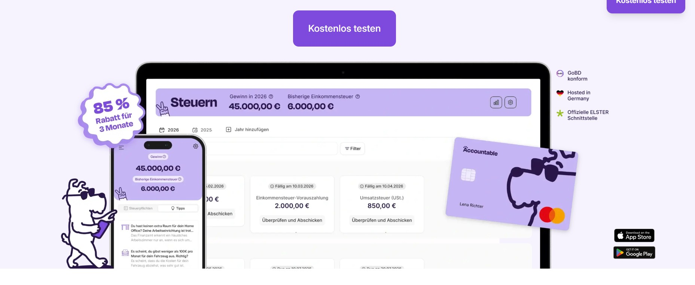
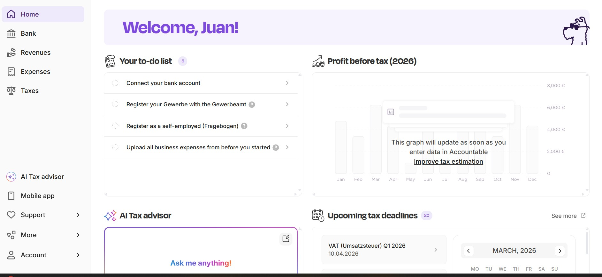
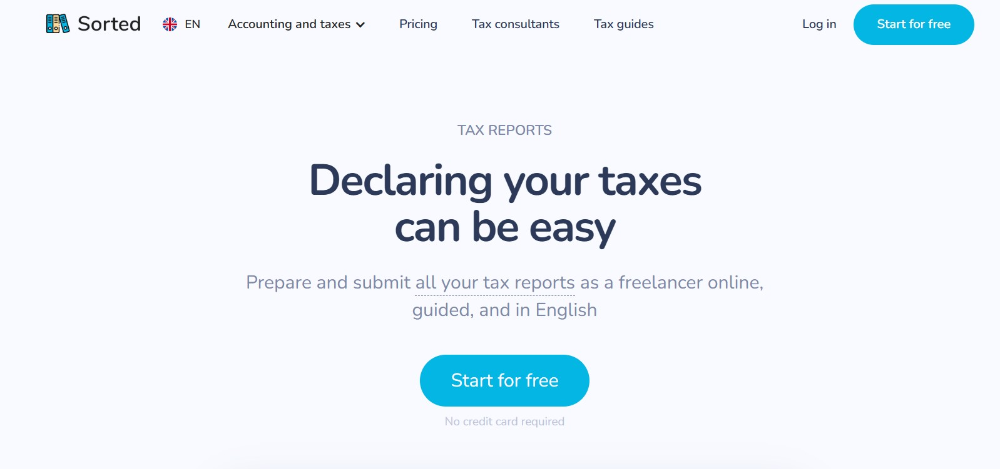
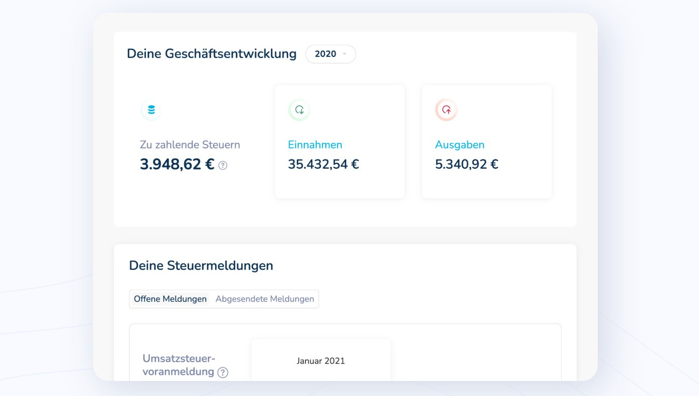
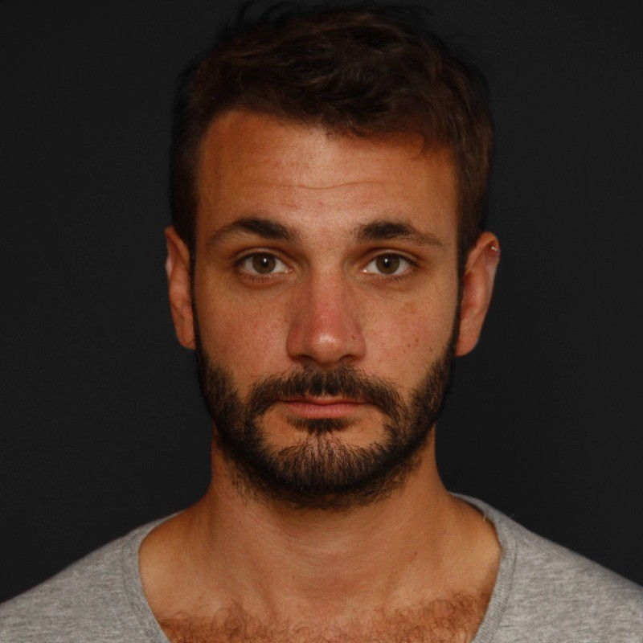
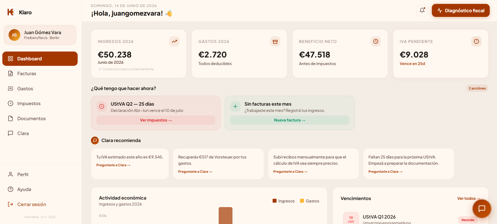
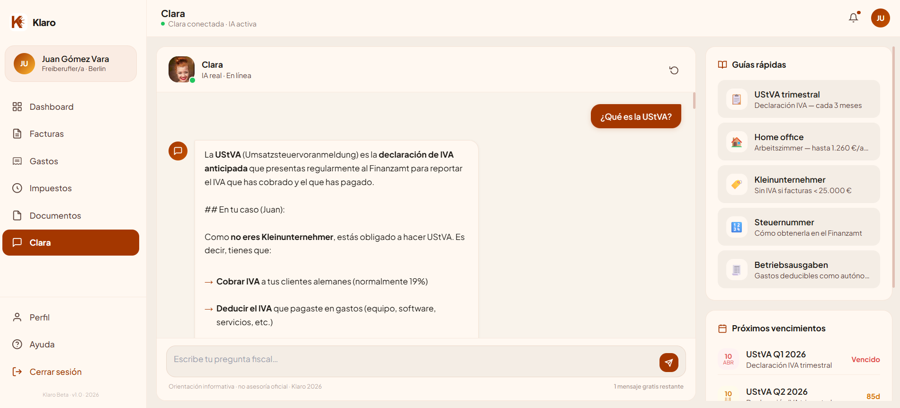
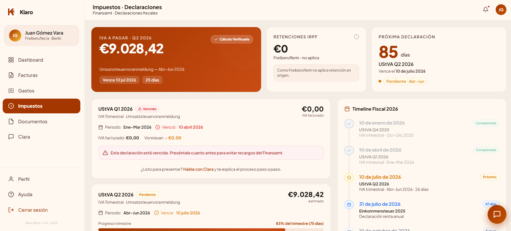

The Language
War.
Every year, between January and July, Spanish-speaking freelancers in Germany face the same system: a tax declaration in legal German, with no translation, no guidance, and no margin for error. Most of them pay a Steuerberater between €300 and €800 a year. Not because they need a tax expert, but because they need someone to feel responsible for the outcome. That is not a tax problem. That is a confidence problem. And no tool was designed to solve it in Spanish.
354,000 people speak Spanish at home in Germany. 0.4% of the population. Mikrozensus 2024.
What a tax advisor charges per year. Not for advice, but for the peace of mind of having someone else responsible.
Of an estimated 1.5 million foreign freelancers in Germany, around 175,000 are Spanish speakers. No tool existed for any of them.

What already exists and what's missing.
Before defining what Klaro should be, I needed to understand what already existed. I analyzed the two main competitors in the German freelancer tax space.
The most complete tool in the market. Covers income and expense tracking, VAT declarations, tax estimation, and recently added an AI advisor. But only available in German and English, and the AI is locked behind a premium plan.


A cleaner, more focused tool. Guides freelancers through tax declarations in English. Good UX, clear language. But English only, no Spanish, and no AI advisor.


| Accountable | Sorted | Klaro | |
|---|---|---|---|
| Spanish language | ✗ | ✗ | ✓ |
| AI advisor | Premium only | ✗ | Core product |
| Personalized profile | ✗ | ✗ | ✓ |
| Emotional tone | Friendly | Neutral | Trusted advisor |
What the data
actually revealed.
Before writing a single line of code, I went out to listen. I ran a quantitative survey with Spanish-speaking freelancers living in Germany to validate the problem.
The data confirmed what I suspected but also revealed something I did not expect: the emotional dimension of the problem is as significant as the technical one. Anxiety, not ignorance, is the real barrier.
What it actually
felt like.
The numbers told me there was a problem. The interviews told me what it actually felt like. I conducted qualitative interviews with Spanish-speaking freelancers in Germany across different profiles, experience levels, and cities. The goal was not to validate what I already knew. It was to understand the emotional texture of the problem.
"Every year I finish with a knot in my stomach. I know I'm leaving money on the table, but I would rather not risk it."

Juan Nasra · Freelance Designer | Filmmaker · Berlin"My biggest fear is getting it wrong and being fined."
Defining what Klaro
had to stop trying to be.
With the research done and the benchmark clear, I had everything I needed to define what Klaro had to be.
No Figma.
Just a live product.
Klaro was built differently from the start. There was no Figma file. No handoff document. No gap between design and code. Every screen was designed and shipped simultaneously using Claude Code, an AI-native development workflow where product decisions, visual design, and implementation happened in the same cycle.
Every iteration happened directly in the browser. Design decisions were validated against real data from Supabase, not static mockups.
Five surfaces. One coherent system.



See it in
action.
One tool per
phase of the process
AI was not a single tool. It was a system of specialized tools, one matched to each phase of the Design Thinking process.
Four metrics that
actually matter.
profile_completedclara_message_sentupgrade_clicked
The MVP is live.
This is where it goes next.
Klaro is live. The core pipeline works. But the MVP is just the beginning.